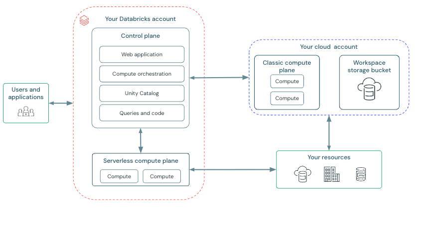
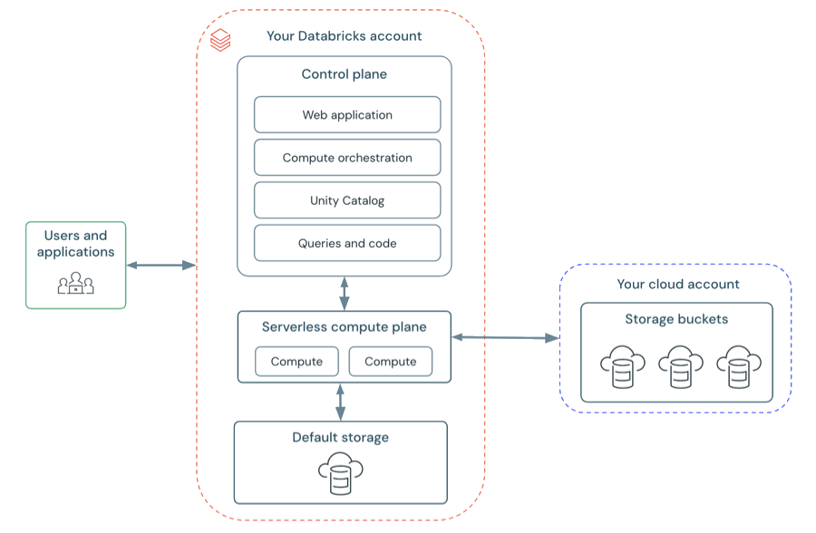
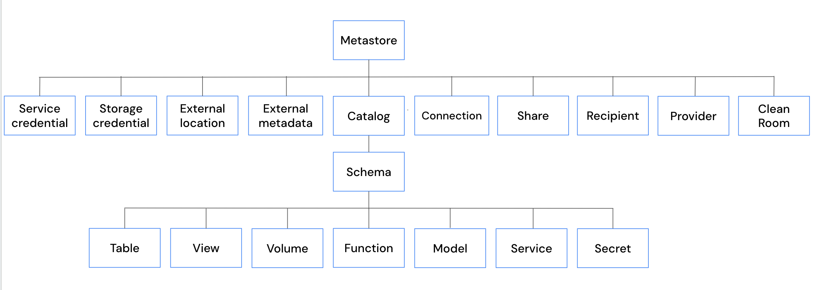
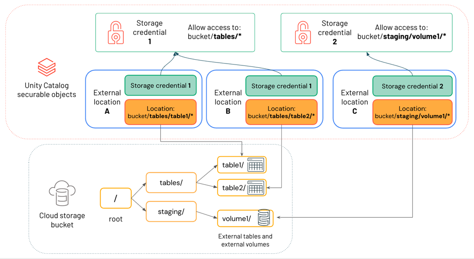
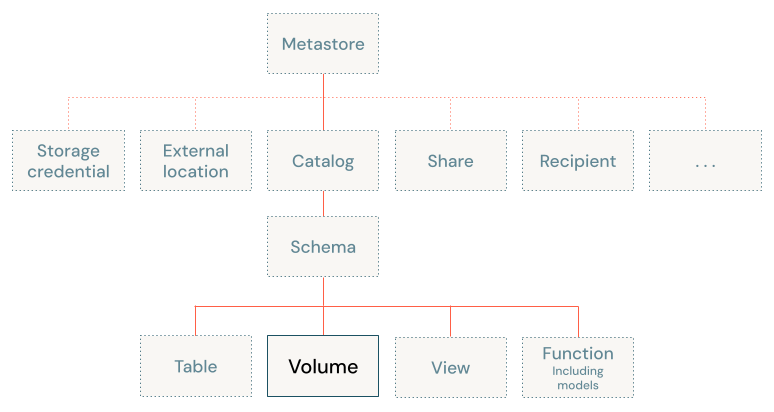
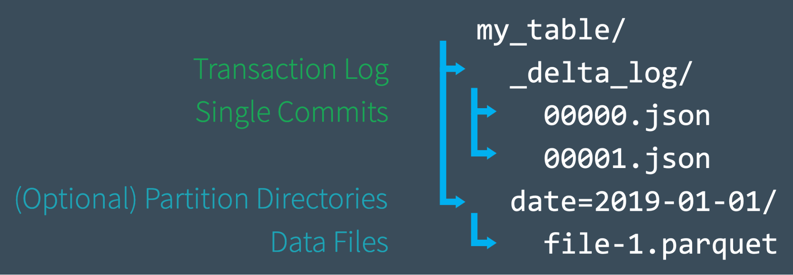
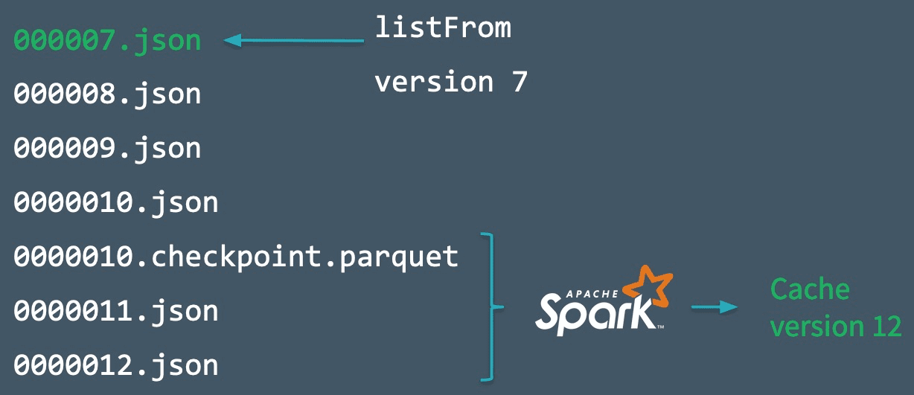
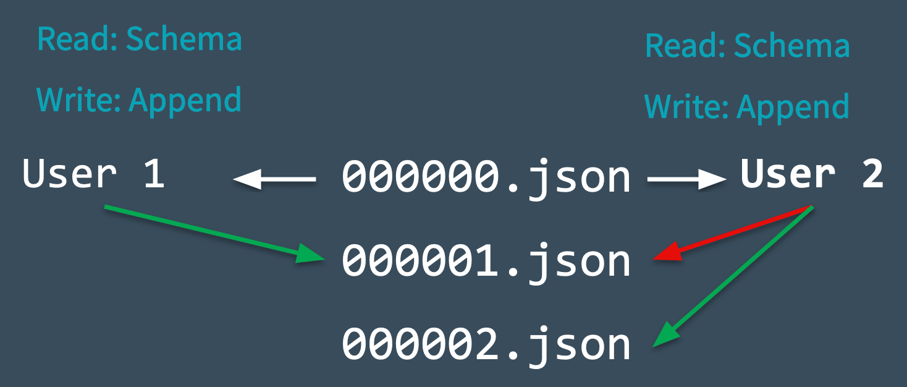
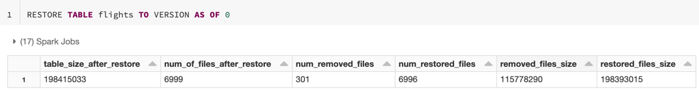
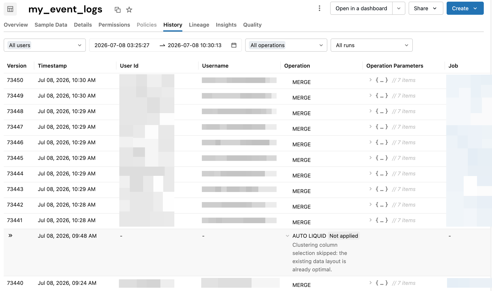

One vendor feed, followed from a CSV file to a governed Gold view
This closes Week 1. P1, P2 and P3 each gave you one layer. Today you stack them: platform → catalog → storage → Delta log, then run one real-looking scenario through all four and break it on purpose.
A write is visible only when its commit lands in _delta_log.
- History, time travel,
RESTORE VACUUMbounds how far back you can go
Storage never moves; you pick the engine per job.
- Serverless by default, SQL warehouse for BI
- Classic when you need what serverless won't let you configure
UC always owns the metadata. Managed = UC owns the files too.
- External locations, volumes, grants
DROP/UNDROP/SET MANAGED
RESTORE vs UNDROP) comes back in section 8 and in the scenario check.How to use this page
- One section at a time. The sidebar shows minutes per section. Your progress and answers are saved in this browser.
- 🤔 "Your call" boxes: answer in your head first, then open.
- Two pause points (green dashed boxes). Stop there if you're tired; nothing is lost.
- The scenario check (§11) has a "Copy my answers" button so you can paste them in chat for the misses log.
| Exam section (weight) | Where |
|---|---|
| §1 Databricks Intelligence Platform (6%) | 3, 6 |
| §2 Data Ingestion and Loading (21%) | 5, 7 |
| §3 Data Transformation and Modeling (22%) | 7 |
| §6 Troubleshooting, Monitoring, Optimization (10%) | 6, 8, 9 |
| §7 Governance and Security (15%) | 4, 5, 8 |
Takeaway: one table, four layers. If you can say what each layer does when something goes wrong, you understand the table.
Acme Retail's vendor feed, end to end
A vendor drops daily CSV order files into their own S3 bucket. You make them reachable with governance, load a Bronze Delta table, and give analysts a small Gold object. Read left to right.
The same picture, as four layers stacked under every table:
| Layer | Question it answers | Section |
|---|---|---|
| Platform / compute | What engine runs my code, and where does it run? | 3 |
| Catalog (Unity Catalog) | What exists, what's it called, who may touch it? | 4 |
| Storage | Where do the bytes live, and who owns their lifecycle? | 5 |
| Delta log | Which files make up version N, and how do writers agree? | 6 |
Takeaway: the vendor owns the files; your pipeline owns the table. That one split decides external vs managed everywhere on this page.
Control plane, compute plane, and where your data sits
Databricks splits into a control plane (web app, job orchestration, Unity Catalog, your queries and code) and a compute plane where the work runs. Classic compute runs in your cloud account; serverless compute runs in Databricks' account. Your data stays in your storage either way.


This is the P2 idea in a picture: storage (S3 + Delta) never moves, and any engine can point at the same table because Unity Catalog in the control plane tells each engine what the table is and whether you're allowed in.
Pick the engine: a decision flow
Serverless limits worth memorising
Checked against Serverless compute limitations (page updated Nov 17, 2026):
- No compute-scoped init scripts. Install Python packages with
%pipor the environment panel instead (P2 W4). - Most Spark configs can't be set, only a supported list.
- No compute policies, instance pools, compute-scoped libraries or env vars.
- Max runtime 7 days; longer runs need classic.
- Spark Connect only: DataFrame APIs work, RDD APIs don't.
- No Spark UI: use the query profile (W4 Friday).
- Streaming: only
availableNow(or deprecatedonce) triggers. - ANSI mode on; session time zone UTC;
%pipinstalls vanish with the session. - Data access must go through Unity Catalog (external locations, volumes).
A nightly Python job must read from an internal system whose JDBC driver is installed by your platform team's init script. Serverless or classic?
Classic jobs compute. The blocker isn't Python or JDBC. It's the init script, which serverless doesn't run. If the driver could come in as a normal Python package (%pip) or the source has a Lakeflow Connect connector, serverless would be fine.
Cost check, if you're curious: SELECT sku_name, usage_date, SUM(usage_quantity) AS dbus FROM system.billing.usage GROUP BY ALL ORDER BY usage_date DESC. Older note: Spark parallelism on single-node and serverless.
Takeaway: serverless by default; classic only when you must configure the machine.
Three-level names, securables beside them, and grants that flow down
Every table you'll ever query is catalog.schema.object inside one metastore (one per region). Next to catalogs sit the securables that govern access to things outside: storage credentials, external locations, connections, shares.

How privileges flow: inheritance + "usage gates"
A privilege granted on a container (catalog, schema) applies to all its current and future children. SELECT on a schema = read every table and view in it, including ones created next month.
To read main.gold.x you need all three: USE CATALOG on main, USE SCHEMA on main.gold, SELECT on x (or inherited). A table owner can't bypass the gates: the catalog/schema owner controls them.
| To do this… | …you need (besides USE CATALOG + USE SCHEMA) |
|---|---|
| Read a table or view | SELECT on it (or on its schema/catalog) |
| Create a managed table | CREATE TABLE on the schema |
| Create an external table at a path | CREATE TABLE on the schema + CREATE EXTERNAL TABLE on the external location (P3 W2) |
| Create an external volume | CREATE VOLUME on the schema + CREATE EXTERNAL VOLUME on the external location |
| List / read files in a volume | READ VOLUME (write needs WRITE VOLUME) |
| Discover that objects exist, without data access | BROWSE on the catalog (doesn't need the usage gates) |
| Grant, revoke, change ownership | Be the owner, or have MANAGE on the object |
- All users have
USE CATALOGonmainby default. So in a "can't read the view" question aboutmain, the missing piece is usuallyUSE SCHEMA. - Views run with the owner's rights on the underlying tables (on serverless, SQL warehouses and standard compute). Analysts need
SELECTon the view, not on Bronze. The view owner must keepSELECTon Bronze, or the view breaks for everyone. MODIFY= change data (INSERT/UPDATE/DELETE/MERGE). It never helps a read.
-- Who can do what? Owners, MANAGE holders and metastore admins see all grants.
SHOW GRANTS ON SCHEMA main.gold;
SHOW GRANTS `analysts` ON VIEW main.gold.daily_vendor_revenue;
-- Make the catalog discoverable without opening data
GRANT BROWSE ON CATALOG main TO `account users`;An analyst has SELECT on main.gold.daily_vendor_revenue but gets INSUFFICIENT_PERMISSIONS. Bronze grants are fine for the view owner. What's missing?
USE SCHEMA on main.gold (and USE CATALOG on main, though everyone has that by default). SELECT alone never opens the containers. Not MODIFY (that's for writes) and not anything on Bronze (the view uses its owner's rights).
Takeaway: grants flow down; usage gates must be open at every level above the object.
Who is allowed to touch which path, and where managed data lands
A storage credential wraps a cloud identity (an IAM role on AWS). An external location pairs a credential with a path. External tables, external volumes and managed storage roots are all created under external locations.

Where does a managed table's data go? The most specific root wins
- Paths can't overlap. Managed storage, external tables and external volumes each need their own path. Overlaps fail with
LOCATION_OVERLAP. ALTER SCHEMA … SET MANAGED LOCATIONaffects only new managed tables and volumes. Existing ones don't move.- Where the source files came from never decides managed vs external. Only
LOCATIONon the table does.
Volumes: governed files, not tables

| Managed volume | External volume | |
|---|---|---|
| Files live | In the schema's managed storage | At an existing path under an external location |
DROP VOLUME | UC deletes files (7-day retention) | Files stay in cloud storage |
| Access | Only through UC | UC governs; outside tools can use the URI |
| Fits | Files your pipelines create | Landing zones others write (our vendor) |
Path: /Volumes/<catalog>/<schema>/<volume>/<path>. You can't list /Volumes/main alone, and you can't register volume files as a table. You read them into one.
-- Admin, once: credential + location (needs CREATE EXTERNAL LOCATION on the metastore)
CREATE EXTERNAL LOCATION IF NOT EXISTS acme_landing
URL 's3://acme-landing/'
WITH (STORAGE CREDENTIAL acme_landing_role);
GRANT CREATE EXTERNAL VOLUME ON EXTERNAL LOCATION acme_landing TO `data-engineers`;
-- You: govern the vendor's folder in place
CREATE SCHEMA IF NOT EXISTS main.landing;
CREATE EXTERNAL VOLUME main.landing.vendor_raw LOCATION 's3://acme-landing/vendor/';
GRANT READ VOLUME ON VOLUME main.landing.vendor_raw TO `data-engineers`;
LIST '/Volumes/main/landing/vendor_raw/orders/';# Python: the same governed path works everywhere
display(dbutils.fs.ls("/Volumes/main/landing/vendor_raw/orders/"))
df = spark.read.option("header", True).csv("/Volumes/main/landing/vendor_raw/orders/")Why an external volume and not a managed one, or an external table over the CSVs?
The vendor keeps writing into their bucket, so the files have an outside owner → govern in place (external). A managed volume means copying files into UC storage the vendor can't write to. An external table would govern rows, not files, and wouldn't give you /Volumes file access for inspection, reprocessing or Auto Loader next week.
Older note: Unity Catalog volumes, storage credentials and external locations.
Takeaway: credentials and locations govern paths; volumes govern files; tables govern rows. Managed data lands at the most specific managed root.
A table version is a list of files, written down in order
A Delta table is Parquet data files plus a _delta_log/ folder. Each successful write adds exactly one numbered commit file. The table at version N = everything the commits 0…N say is "added" and not later "removed".


What one commit contains (illustrative, trimmed)
// _delta_log/00000000000000000008.json — the nightly append, one JSON action per line
{"commitInfo":{"operation":"WRITE","operationParameters":{"mode":"Append"},"isBlindAppend":true}}
{"add":{"path":"part-00000-3f1c….snappy.parquet","size":48213,"dataChange":true,"stats":"{\"numRecords\":5120,…}"}}
{"add":{"path":"part-00001-9a2e….snappy.parquet","size":47790,"dataChange":true,"stats":"{\"numRecords\":5004,…}"}}
// an UPDATE would instead write "remove" for rewritten files and "add" for their replacements;
// schema/property changes write "metaData"; feature upgrades write "protocol".Two consequences you'll use all the time:
- Old files aren't deleted by UPDATE/DELETE. They're only marked removed in the log. That's why time travel and
RESTOREwork, and whyVACUUMexists. - Per-file stats (row counts, min/max) live in the log, so engines skip files without opening them (data skipping, W4).
Atomic commits and optimistic concurrency

- Default isolation is WriteSerializable. Appends that don't read the table never conflict with each other.
- Conflicts happen when an
UPDATE/DELETE/MERGEread data that a concurrent commit changed. Row-level concurrency (with deletion vectors) shrinks that to real row overlaps. - Metadata changes (
ALTER TABLE … ADD COLUMNS, table properties) can fail all concurrent writers and stop streaming readers.
- A query reads the snapshot it started with, even while writers commit (isolation).
- There is no "half-written table" state to repair after a crash.
FSCK REPAIR TABLEis for a different problem: files deleted by hand from storage.
Two nightly jobs append to main.bronze.vendor_orders at the same second. One also runs a MERGE that reads yesterday's rows. Which one can fail?
The two plain appends both succeed (the loser retries as the next version). The MERGE is the one that can raise a concurrent-modification error, because it read data that may have changed under it. Fixes: narrow the MERGE condition so it touches fewer files, schedule them apart, or retry.
Older notes: ACID on Delta · Course: Using Apache Spark with Delta Lake.
Takeaway: a commit is one atomic file creation. No commit, no change. Writers race optimistically and only real overlaps fail.
Run the week: land, load, break, fix, publish, clean up
Six steps, one table. Before each Next, say what you'd do. Each step names the layer it leans on.
Step 1 · Make the files reachable §7 storage
Done in section 5: acme_landing external location → external volume main.landing.vendor_raw. Engineers browse /Volumes/main/landing/vendor_raw/orders/ with READ VOLUME; nobody touches raw S3 URIs or IAM keys.
UNDROP, you can rebuild it from them. Keeping raw input replayable is a design choice, not an accident.Step 2 · Pick compute per job §1 platform
| Work | Compute | Why |
|---|---|---|
| Explore files in a notebook (Python + SQL) | Serverless notebook | Starts in seconds, nothing to size |
| Nightly Bronze load | Serverless job | Short, scheduled, no idle cost |
| Analysts on the Gold view | Serverless SQL warehouse | SQL + BI concurrency |
| Legacy task with an init script | Classic jobs compute | Serverless won't run init scripts |
Step 3 · Load Bronze as a managed table §2 §3 storage
The files have an outside owner; the table is yours. No LOCATION → managed, so it gets predictive optimization, automatic cleanup and UNDROP.
CREATE TABLE IF NOT EXISTS main.bronze.vendor_orders AS
SELECT *,
_metadata.file_path AS source_file, -- lineage: which CSV each row came from
current_timestamp() AS ingested_at
FROM read_files('/Volumes/main/landing/vendor_raw/orders/',
format => 'csv', header => true);
-- read_files adds _rescued_data by default: values that don't fit the inferred schema land there
DESCRIBE TABLE EXTENDED main.bronze.vendor_orders; -- Type: MANAGED# Python equivalent: no .option("path") → managed
from pyspark.sql import functions as F
(spark.read.option("header", True).csv("/Volumes/main/landing/vendor_raw/orders/")
.select("*", F.col("_metadata.file_path").alias("source_file"))
.withColumn("ingested_at", F.current_timestamp())
.write.saveAsTable("main.bronze.vendor_orders"))COPY INTO and Auto Loader, which only pick up new files.Step 4 · Wednesday goes wrong §6 Delta log
(a) The load crashes mid-write while analysts query. No commit → they keep seeing the last version. Nothing to repair.
(b) A teammate runs a bad update: UPDATE main.bronze.vendor_orders SET amount = 0 WHERE vendor_id = 42; (wrong vendor).
DESCRIBE HISTORY main.bronze.vendor_orders; -- find the UPDATE (say v8) → good version is 7
SELECT count(*), sum(amount) FROM main.bronze.vendor_orders VERSION AS OF 7 WHERE vendor_id = 42;
RESTORE TABLE main.bronze.vendor_orders TO VERSION AS OF 7; -- itself a new commit (v9)
Could you restore to 12 days ago?
Not by default. Time travel needs the old data files, kept 7 days (delta.deletedFileRetentionDuration). On UC managed tables, queries older than that are blocked even before VACUUM runs. See section 8.
Step 5 · Give analysts a Gold object §3 §7 catalog
Analysts want daily revenue per vendor that matches Bronze the moment they query. The query is light. → plain view: no stored data, always fresh. A materialized view stores results and refreshes on a schedule, so it lags (your diagnostic Q6).
CREATE OR REPLACE VIEW main.gold.daily_vendor_revenue AS
SELECT vendor_id, CAST(order_ts AS DATE) AS order_date, SUM(amount) AS revenue
FROM main.bronze.vendor_orders
GROUP BY ALL;
GRANT USE SCHEMA ON SCHEMA main.gold TO `analysts`; -- USE CATALOG on main: everyone has it by default
GRANT SELECT ON VIEW main.gold.daily_vendor_revenue TO `analysts`;| Plain view | Materialized view | |
|---|---|---|
| Stores data? | No, only the SQL | Yes, precomputed results |
| Freshness | Always current | As of the last refresh |
| Pick when | Query is light, freshness matters | Query is heavy, read often, lag OK |
Older: W46 DB3 Gold layer objects · W47 DB1 streaming tables vs MVs.
Step 6 · Friday's cleanup script §7 lifecycle
| Action | Result |
|---|---|
DROP VOLUME main.landing.vendor_raw (external) | Volume gone; files stay in the vendor's bucket |
DROP TABLE main.bronze.vendor_orders (managed) | UNDROP TABLE restores data, history and grants within 7 days; then files are purged |
DROP VIEW main.gold.daily_vendor_revenue | Only the SQL is lost; recreate it |
| Legacy external Delta table only Databricks writes | ALTER TABLE … SET MANAGED keeps name, grants, history; rollback window 14 days |
RESTORE undoes a change (table still exists). UNDROP undoes a delete.Takeaway: the same four layers answer every step: where files live, which engine, what the log allows, who can see it.
Every recovery tool has a clock. Know the clocks.
| Tool | Fixes | Needs | Gotcha |
|---|---|---|---|
VERSION AS OF / TIMESTAMP AS OF | Look at the past | Old log + old data files | Blocked past deletedFileRetentionDuration on UC managed tables |
RESTORE TABLE … TO VERSION AS OF n | A bad change on an existing table | The table exists; files of vn still exist | It's a new commit; history keeps the whole story |
UNDROP TABLE (also WITH ID) | A dropped UC table (managed or external) | Within the recovery period (7 days default); parent schema exists | Brings back grants and history, not PK/FK constraints. External needs CREATE EXTERNAL TABLE on the location |
VACUUM | Storage cost, compliance deletes | Files unreferenced > 7 days | Shrinks time travel. Below 7 days: DELTA_VACUUM_RETENTION_PERIOD_TOO_SHORT |
SET MANAGED / UNSET MANAGED | Move external → managed in place | DBR 17.3 LTS+ or serverless | Brief write pause. Run UNSET MANAGED before ever dropping it in the window |
VACUUM vs time travel: the interplay
- Two clocks:
logRetentionDuration(30 days) decides how long history entries live.deletedFileRetentionDuration(7 days) decides how long removed data files live. Reading a version needs both. - Want 30 days of time travel? Raise both, before the files are gone, and accept higher storage cost.
VACUUM … DRY RUNpreviews deletions.LITEis faster (uses the log);FULL(default) also catches orphans from aborted writes.
-- keep 30 days of readable history (set BEFORE you need it)
ALTER TABLE main.bronze.vendor_orders SET TBLPROPERTIES (
'delta.deletedFileRetentionDuration' = 'interval 30 days',
'delta.logRetentionDuration' = 'interval 30 days');
VACUUM main.bronze.vendor_orders DRY RUN;
-- the dropped-table toolkit
SHOW TABLES DROPPED IN main.bronze;
UNDROP TABLE main.bronze.vendor_orders;Predictive optimization: maintenance you don't schedule
- Runs
OPTIMIZE,VACUUMandANALYZEautomatically on UC managed tables only (external tables aren't eligible, which is why P3 W4 usedSET MANAGED). - Enabled by default; set at account, inherited by catalog → schema → table, overridable at each level.
- Billed as serverless jobs. It doesn't run
ZORDER. - Consequence:
VACUUMwill actually run on your managed tables, so the 7-day time-travel limit is real, not theoretical.

P3 W3 again: yesterday someone dropped the managed table main.silver.customers. RESTORE or UNDROP?
UNDROP TABLE main.silver.customers. RESTORE rolls an existing table back to an older version; on a dropped table it fails with TABLE_OR_VIEW_NOT_FOUND. If a new table already took the name, rename it first, or use SHOW TABLES DROPPED + UNDROP TABLE WITH ID.
Older note: Delta time travel and retention.
Takeaway: 7 days for data files and UNDROP, 14 for UNSET MANAGED, 30 for history entries. RESTORE = change, UNDROP = delete.
Read the error class, name the layer, apply the fix
Every error below is a real Databricks error class. Notice how each one points at exactly one of the four layers.
| You see | Layer | Usual cause | Fix |
|---|---|---|---|
INSUFFICIENT_PERMISSIONS on a SELECT | Catalog | Missing USE SCHEMA / USE CATALOG, or the view owner lost SELECT on the source | SHOW GRANTS, open the gates |
INSUFFICIENT_PERMISSIONS_EXT_LOC on CREATE TABLE … LOCATION | Storage | No CREATE EXTERNAL TABLE on the external location | Grant it on the location (P3 W2) |
LOCATION_OVERLAP | Storage | Path overlaps another external table, volume or managed root | Use a distinct sub-path |
TABLE_OR_VIEW_NOT_FOUND on RESTORE | Catalog | The table was dropped | UNDROP TABLE |
UC_UNDROP_RESOURCE_PAST_RETENTION_PERIOD | Catalog | Dropped more than the recovery period ago | Rebuild from raw files (Step 1's replayable landing) |
DELTA_UNSUPPORTED_TIME_TRAVEL_BEYOND_DELETED_FILE_RETENTION_DURATION | Delta log | Asked for a version older than file retention | Raise retention ahead of time |
DELTA_VACUUM_RETENTION_PERIOD_TOO_SHORT | Delta log | VACUUM … RETAIN below the safety check | Keep ≥ 7 days; long writers may still be running |
DELTA_CONCURRENT_APPEND (ConcurrentAppendException) | Delta log | A MERGE/UPDATE read files that a concurrent append changed | Narrow predicates, separate schedules, retry |
DELTA_FILE_NOT_FOUND | Storage | Someone deleted data files directly in S3 | Never touch table folders by hand; use DELETE/VACUUM |
INFINITE_STREAMING_TRIGGER_NOT_SUPPORTED | Compute | Default stream trigger on serverless | .trigger(availableNow=True) |
Your diagnostic toolkit
Takeaway: before fixing, name the layer. The fix is almost always in that layer.
Load, break, restore, drop, undrop, all in your own schema
Create a notebook, attach serverless, default language SQL. Paste one cell at a time (Python cells start with %python). Free Edition has no external locations, so the landing zone is a managed volume; everything else is the same as Acme's.
Cell 1 · Schema + landing volume (SQL)
USE CATALOG workspace;
CREATE SCHEMA IF NOT EXISTS dd_w1;
USE SCHEMA dd_w1;
CREATE VOLUME IF NOT EXISTS landing; -- managed volumeCell 2 · Drop two "vendor" files into the volume (Python)
%python
base = "/Volumes/workspace/dd_w1/landing/orders"
dbutils.fs.put(f"{base}/day1.csv",
"order_id,vendor_id,order_ts,amount\n"
"1,41,2026-11-18 09:00:00,120.50\n2,42,2026-11-18 10:15:00,80.00\n3,42,2026-11-18 11:30:00,35.25\n", True)
dbutils.fs.put(f"{base}/day2.csv",
"order_id,vendor_id,order_ts,amount\n"
"4,41,2026-11-19 08:05:00,60.00\n5,43,2026-11-19 09:40:00,99.90\n6,42,2026-11-19 12:10:00,15.75\n", True)
display(dbutils.fs.ls(base)) # 2 filesCell 3 · Bronze as a managed table (SQL)
CREATE OR REPLACE TABLE bronze_vendor_orders AS
SELECT order_id, vendor_id, order_ts,
CAST(amount AS DECIMAL(10,2)) AS amount,
_metadata.file_path AS source_file,
current_timestamp() AS ingested_at
FROM read_files('/Volumes/workspace/dd_w1/landing/orders/', format => 'csv', header => true);
SELECT count(*) AS n, sum(amount) AS total FROM bronze_vendor_orders; -- 6 | 411.40
DESCRIBE TABLE EXTENDED bronze_vendor_orders; -- Type: MANAGEDCell 4 · The bad update, then RESTORE (SQL)
UPDATE bronze_vendor_orders SET amount = 0 WHERE vendor_id = 42;
SELECT sum(amount) FROM bronze_vendor_orders; -- 280.40 (vendor 42 lost 131.00)
DESCRIBE HISTORY bronze_vendor_orders; -- v0 CREATE OR REPLACE TABLE AS SELECT, v1 UPDATE
SELECT sum(amount) FROM bronze_vendor_orders VERSION AS OF 0; -- 411.40
RESTORE TABLE bronze_vendor_orders TO VERSION AS OF 0;
SELECT sum(amount) FROM bronze_vendor_orders; -- 411.40, and history now shows v2 RESTORECell 5 · Gold view (SQL)
CREATE OR REPLACE VIEW gold_daily_vendor_revenue AS
SELECT vendor_id, CAST(order_ts AS DATE) AS order_date, SUM(amount) AS revenue
FROM bronze_vendor_orders GROUP BY ALL;
SELECT * FROM gold_daily_vendor_revenue ORDER BY order_date, vendor_id;
-- 5 rows: 11-18 → 41: 120.50, 42: 115.25 · 11-19 → 41: 60.00, 42: 15.75, 43: 99.90Cell 6 · Drop it, try RESTORE, then UNDROP (SQL, run one line at a time)
DROP TABLE bronze_vendor_orders;
SELECT * FROM gold_daily_vendor_revenue; -- fails: the view's source is gone
RESTORE TABLE bronze_vendor_orders TO VERSION AS OF 0; -- fails: TABLE_OR_VIEW_NOT_FOUND (nothing to roll back)
SHOW TABLES DROPPED IN dd_w1; -- 1 row, tabletype managed
UNDROP TABLE bronze_vendor_orders;
SELECT count(*) FROM gold_daily_vendor_revenue; -- 5 again; DESCRIBE HISTORY still shows v0–v2Cell 7 · Feel the VACUUM safety check, then clean up (SQL)
VACUUM bronze_vendor_orders DRY RUN; -- likely 0 files: nothing is older than 7 days yet
VACUUM bronze_vendor_orders RETAIN 0 HOURS; -- expect DELTA_VACUUM_RETENTION_PERIOD_TOO_SHORT
DROP SCHEMA dd_w1 CASCADE; -- when you're doneChecklist (saved)
Eleven original questions, tagged by exam section
Pick one option; the explanation shows why the right one is right and why each other one is wrong. Answers are saved. When you're done, copy your answers and paste them in chat so misses go into Monday's review.
Say it out loud first, then reveal
Each answer is about a minute spoken. The grey line says what makes it sound senior.
Q1. Walk me through how you'd onboard a new vendor file feed into the lakehouse.
I start with ownership. The vendor owns the files, so I govern them in place: a storage credential and external location (usually admin-owned), then an external volume over their folder so engineers use /Volumes paths and UC grants, never raw keys. I load into a managed Bronze Delta table with lineage columns (source file, ingest time), so the platform handles layout, predictive optimization and UNDROP. The load is incremental (Auto Loader or COPY INTO), runs as a serverless job, and Gold is a view or table with least-privilege grants. I keep the raw files replayable, because that's my real backup.
Why it sounds senior: it opens with an ownership decision, names the recovery story, and separates "govern files" from "own tables".
Q2. Managed or external tables: what's your default, and when do you go external?
Managed by default. UC owns the files, so I get automatic maintenance (OPTIMIZE, VACUUM, ANALYZE through predictive optimization), clean drop/undrop semantics and no path sprawl. I go external when something outside Databricks must write those files at a path I don't control, or data must stay at a fixed location for contractual reasons. When the outside writer goes away, I convert with SET MANAGED, which keeps name, grants and history and gives me a 14-day UNSET MANAGED rollback.
Why it sounds senior: a clear default, a specific exception, and a migration path with its rollback.
Q3. Object storage has no transactions. How does Delta give you ACID on it?
Through the transaction log. Data files are immutable Parquet; each change is recorded as one numbered JSON commit listing files added and removed. A commit is one atomic put-if-absent of the next version file: it either exists or it doesn't, so readers never see half a write. Writers use optimistic concurrency: read a snapshot, write files, try to claim the next version; if someone else won, check for logical conflicts and retry or fail. Readers get snapshot isolation. Periodic Parquet checkpoints keep reconstruction fast.
Why it sounds senior: it names the primitive (atomic file creation) instead of saying "Delta handles it".
Q4. "We have time travel, so we don't need backups." How do you respond?
Time travel is an undo button, not a backup. Removed data files are kept 7 days by default, and on managed tables predictive optimization really runs VACUUM, so older versions disappear. History entries last 30 days, but entries without files aren't readable. A dropped table is recoverable for 7 days. And everything sits in the same storage account, so it doesn't protect against account-level mistakes. For real backups: keep raw input replayable, DEEP CLONE critical tables to another location on a schedule, and raise retention deliberately where the business needs longer undo.
Why it sounds senior: it knows the actual clocks and separates "undo" from "disaster recovery".
Q5. An analyst says "I can't read the revenue view." How do you debug it?
I read the error class first. TABLE_OR_VIEW_NOT_FOUND can mean "not visible to you", so I check the usage gates: USE CATALOG and USE SCHEMA on every parent, then SELECT on the view itself (direct or inherited) with SHOW GRANTS, and whether the grant went to a group the analyst is actually in. If the view fails for everyone, the view owner probably lost SELECT on the source, since views run with the owner's rights. For discovery problems I grant BROWSE; for "who changed what" I check the audit system table.
Why it sounds senior: a top-down checklist, plus the view-owner subtlety most people miss.
W1 cheat sheet · Anatomy of a governed table
Databricks DE Associate · §1 §2 §3 §6 §7 · Nov 16–22, 2026The split that decides everything: outside owner of the files → external (location + volume). Your pipeline owns the table → managed.
Platform + compute §1
- Control plane: web app, jobs, UC, queries. Compute plane: classic (your account) or serverless (Databricks').
- Serverless = default for notebooks + jobs. SQL warehouse = SQL/BI only.
- Classic when you must configure compute: init scripts, most Spark confs, RDD API, pools, policies, >7-day runs.
- Python deps on serverless:
%pip/ environment. - No Spark UI on serverless → query profile. Streams:
availableNow.
Unity Catalog + storage §7 §2
catalog.schema.object, one metastore per region.- Credential → external location (credential + path) → external tables / volumes / managed roots.
- Managed data root: schema > catalog > metastore. Paths can't overlap.
- Read =
USE CATALOG+USE SCHEMA+SELECT. Container grants inherit to current + future children. - Volumes govern files at
/Volumes/c/s/v/…; never registered as tables. - External table at a path:
CREATE EXTERNAL TABLEon the location.
Delta + safety §1 §6
- Commit = one atomic JSON in
_delta_log. No commit → no change. - Checkpoints (Parquet) speed up reads. Blind appends never conflict.
RESTORE= undo a change ·UNDROP= undo a delete (7 d).- Files kept 7 d (
deletedFileRetentionDuration), history 30 d (logRetentionDuration). Need both to time travel. - Predictive optimization: OPTIMIZE/VACUUM/ANALYZE, managed only.
SET MANAGEDkeeps name/grants/history;UNSET MANAGED≤ 14 d.
Exam traps
- Serverless limits are about configuring compute, not Python vs SQL.
- Source files in a volume ≠ external table. Only
LOCATIONmakes it external. SELECTalone isn't enough;MODIFYnever helps a read.- Everyone has
USE CATALOGonmainby default. RESTOREon a dropped table fails;UNDROPit.
Don't confuse
- Plain view (SQL only, always fresh) vs MV (stored, refresh lag).
- Managed volume (drop deletes, 7 d) vs external volume (files stay).
- DROP external table (files stay) vs DROP managed (UNDROP 7 d, then purge).
- VACUUM LITE (log only) vs FULL (also orphans from crashes).
- BROWSE (see it exists) vs SELECT (read data).
Self-test (answer aloud)
- Where do a managed table's files go if only the catalog has a root?
- Two blind appends collide. Result?
- Auditor wants day −12. Possible by default?
- Job needs an init script. Compute?
- Analyst has SELECT but no access. Why?
1 catalog root · 2 both commit · 3 no, files kept 7 d · 4 classic jobs compute · 5 missing USE SCHEMA
Facts re-checked on docs.databricks.com on 2026-11-22. Diagrams: Databricks docs + Databricks blog (see section 14).
Where this week comes back
| This week's idea | Comes back in | How |
|---|---|---|
| Volumes + replayable raw files | W2 Ingestion (next week) | COPY INTO and Auto Loader read /Volumes paths and load only new files. Older: W43 deep dive: governed ingestion to Bronze |
Managed Bronze table + _rescued_data | W2 Wed, W3 | Schema inference, evolution and rescued data; then cleaning into Silver |
| Plain view vs MV | W4 Tue | Gold objects: table vs view vs MV vs streaming table |
| Data skipping stats, predictive optimization, query profile | W4 Fri | "Why is it slow?": file layout, liquid clustering, tuning |
| Serverless vs classic jobs compute | W5 | Lakeflow Jobs task compute, cluster startup failures |
| Grants and inheritance | W6 | GRANT/REVOKE, row filters, column masks, ABAC |
| Concurrent writers | W5 Fri | Two jobs hitting one table, safe-to-retry design |
Your older material, still useful
- Platform wrap: Delta, Unity Catalog and compute
- ACID on Delta · Delta time travel and retention
- UC volumes, storage credentials and external locations · Medallion architecture
- This week's pills: P1 · P2 · P3
Official docs (each opened on 2026-11-22)
- High-level architecture · Serverless compute limitations · Choose compute
- What is Unity Catalog? · Permissions model concepts · Privileges reference
- External locations · Managed storage locations · Volumes · read_files
- History and data retention · VACUUM · Isolation levels and write conflicts
- Managed tables · UNDROP · SET MANAGED · Predictive optimization
- Error classes · Blog: Unpacking the transaction log · Exam page
Optional, not homework: kengio study guide: DE Associate.